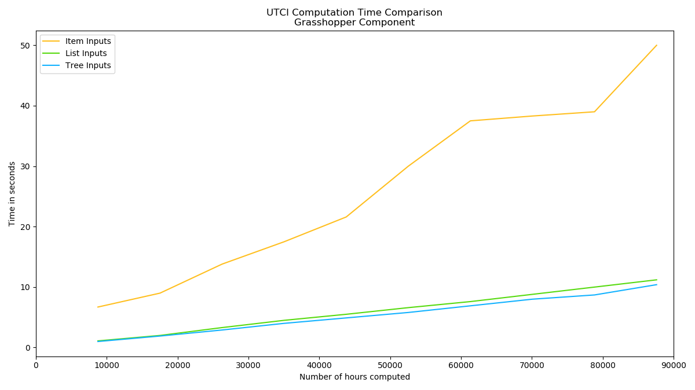
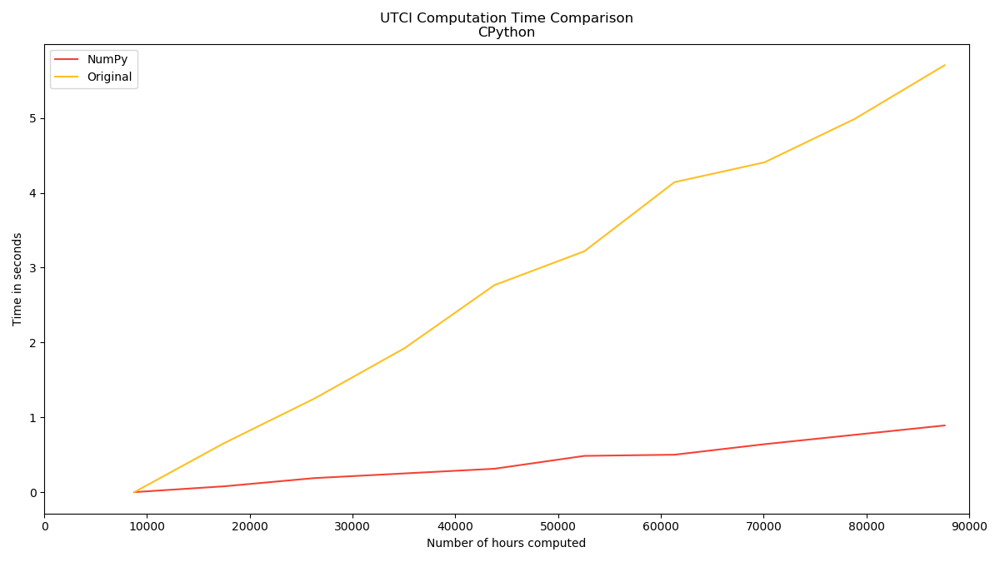
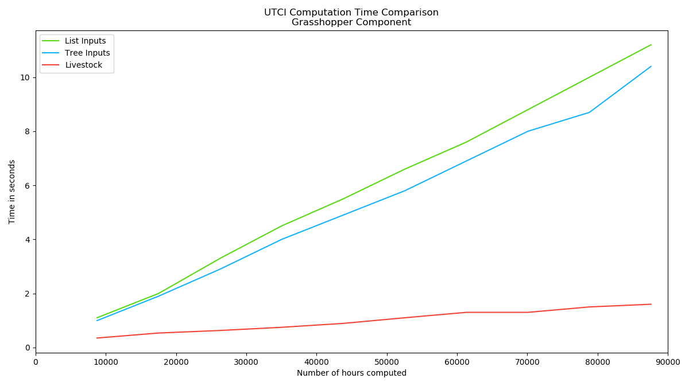

I'm sure that some of you, who are reading this have experienced that some Grasshopper components takes a long time to run. Some of the components you can download are quite computational expensive and therefore take a long time to compute. Even though, Rhino 6 should make it possible to run components on multiple cores, and thereby cutting down the computation time, I thought a small study on other measures to speed up your own components would be in place.
For this speed test I will use the equation for the Universal Thermal Climate Index (UTCI), which is a 6th degree polynomial with 4 variables, which should be efficient to demonstrate the computation time. Ladybug Tools have implemented the equation in one of their components and I have taken that implementation (striped it for some input checks) for this study. I will start by comparing the time it takes to compute the UTCI, when you feed the data into the component, in the three different ways you can in Grasshopper; Item, List and as a Tree.
If you are interested in testing it yourself, you can download the Grasshopper script I used for it here.
In the second part of this post I will show how fast the UTCI can be computed in CPython, and what can be done to try to reach that speed, when in Grasshopper using the Livestock Template Method.
Grasshopper

I used the built-in timer in Grasshopper to test how long time it takes to compute the UTCI, if the component takes the input as Item, List or Tree data. The components, which takes lists and trees are looping through the data inside the component.
The graph above clearly shows that looping through your data, whether it is a list or a tree is much much faster than implementing the component to take Item inputs. Interesting enough; is the tree input a little bit faster than the pure list. I'm not that familiar with the internal workings of Grasshopper, to have a good explanation for that, but maybe someone can elaborate on it in the comments. I have implemented it so that, while I add another year to the list implementation, I put the new year to another tree-branch in the tree implementation. So in each tree-branch there is only one year worth of data. However it takes 10 seconds to compute 10 years of UTCI (list implementation) or 1 year of UTCI at 10 points (tree implementation). I still find that quite slow. The questions is how do we make that faster?
CPython
How long would it take to compute 10 years of UTCI in CPython? Would it be faster than than in Grasshopper (which runs IronPython)? I have taken the same code from the components and looped through the same 10 years. The results are below in the yellow line:

We can approximately cut the computation time in half. This is probably not because the difference between CPython and
IronPython, but because Grasshopper adds a lot of overhead. The question is of course; can we do better? Since we are in
CPython and therefore not restricted by the packages available for IronPython, we can use on the most useful (in my opinion)
packages on PyPI: NumPy. It brings super fast numerical calculations to CPython. NumPy together
with some other scientific packages (SciPy, Matplotlib among others) for CPython was the reason I started exploring
the possibility leaving Grasshopper and IronPython.
I also implemented a version of the UTCI-equation with NumPy and that is the red line above. If you are interested in the implementations take a look here. The NumPy implementation does the job of the 10 years in less than 1 second. And we can see that the slope is less steep than the normal CPython implementation, meaning that the difference in computation time will only get larger the more years we compute. We can not use NumPy directly in Grasshopper - because IronPython - but we can get around that with the Livestock Template Method.
Livestock and Grasshopper
I have created a component that writes all the data from Grasshopper, calls the template, which runs the NumPy implementation and loads the results back into Grasshopper. The results are presented below:

We are not pure CPython-NumPy fast, since we have to write, call and load file, but we are quite close; ~1.5 seconds for 10 years. Compared to the list and tree implementation in Grasshopper, the Livestock implementation is ~7 times faster. Again the slope is less steep (because of NumPy) than the two other implementations, meaning the difference in computation time here also will be larger, the more years we compute.
Wrap-Up
The conclusion of this small study is that if you are going to make computation heavy calculations; you should probably not do it in Grasshopper. There are ways to speed up your calculation in Grasshopper, such as the Livestock Template Method or other methods, but they all are not as fast as the real NumPy.
If you are interested in learning more about Livestock take a look at the available tutorials